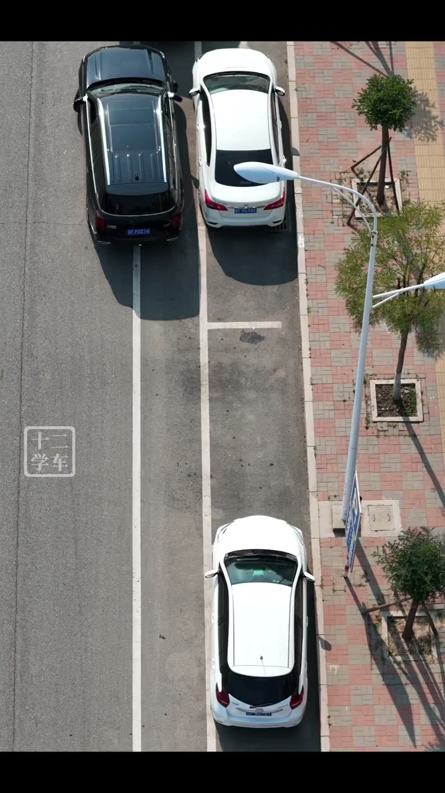
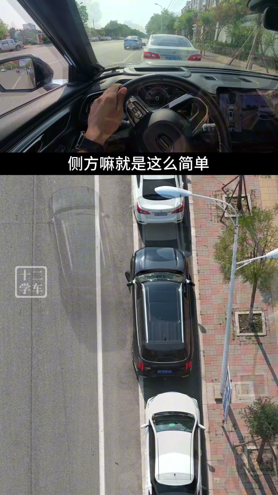
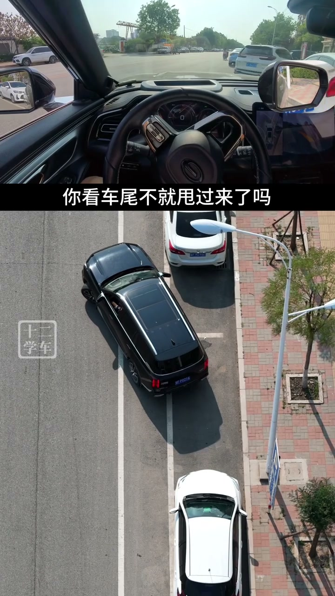

内容要点
视频把侧方停车的调整分成两类：车身角度过大时，车头空间不够；角度过小时，车身偏外、后轮难以入位。讲解反复回到同一个目标——让车尾朝向车位后段，并先把内侧后轮送入合适位置。
入位前先看车尾的目标方向
航拍画面显示，目标车位位于两辆已停车之间。视频建议靠近前方车辆后，通过后视镜确认车位边界和障碍点，再倒向车位后半段。这里的“后半段”是讲解中的方向参照，并非所有车型通用的固定点位；实际应以车身长度、转弯半径和可见距离为准。

后轮到位后，用短距离前后移动收正
视频示范：后轮已经进入车位、车头前方仍有余量时，向前小幅移动，再反向倒车。短距离前进不会明显把后轮拉出，反向倒车则继续把车身收进空位。镜头将驾驶席视角和俯拍叠在一起，强调这是一套可重复的小幅修正，而不是一次性大打方向。

角度失衡时，先开出空间再“甩尾”
如果倒入后角度过大、车头被前车限制，视频建议先向前驶出，在后轮越过障碍点后向内打方向，使车尾向外侧摆出，再重新倒向车位后段。反过来，车身偏外时则向前并向外打方向，让车尾向车位一侧摆回。方向左右取决于车位所在侧，关键是确认车尾移动的方向，并全程低速观察前后距离。

调整思路
不必执着于某一把方向：先让后轮进位，车头有余量时再小幅前进、反向倒车；若空间不足，先驶出并通过甩尾重建倒车角度。